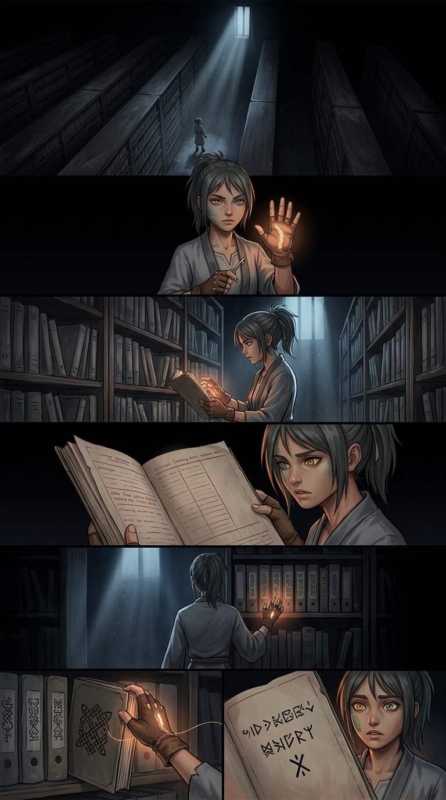
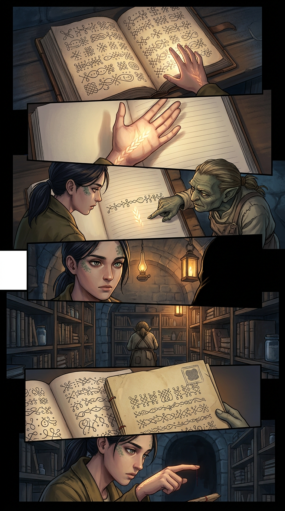
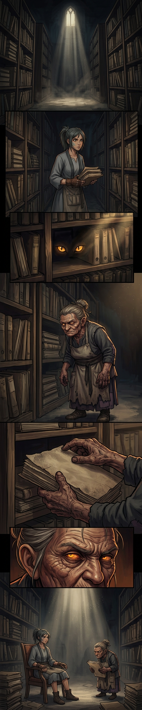
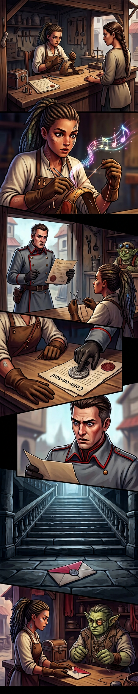
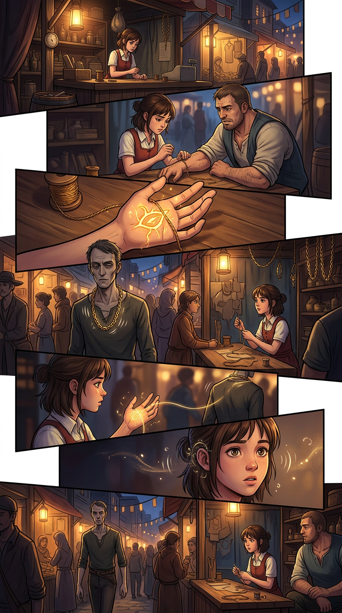
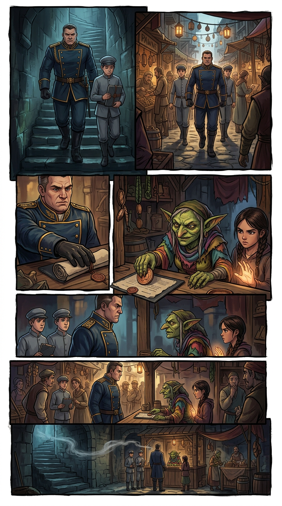
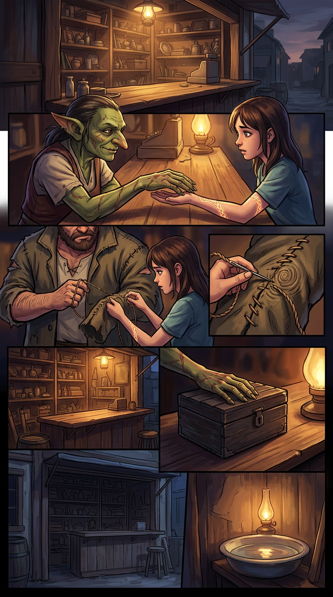
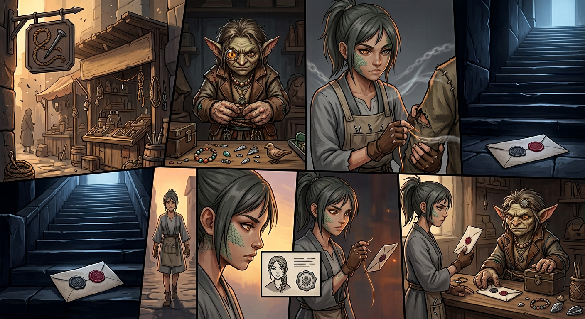

Chapter 006 — The Mother's File
Arc I — The Unspooling · Agnikhand · 10 pages · complete · English + Hindi. Pick a page, or read straight through.

001
002
003 004
004 005
005
006
007
008
009
010Chapter 006 — The Mother's File / माँ की फ़ाइल — CLOSE-OUT
Status: COMPLETE — 10 pages (001–010), EN + Hindi scripts, 10 page images, cast files, glossary + locations grown in-step. Arc: II — The Mendery · Sector: Agnikhand · Open PR for this work: Kyabtao/Manga#3 Chain-stop budget: ONE, not spent this chapter (saved for later arc).
Canon rules added in Chapter 6 (binding forward)
- The sewer is Ira's mother. The cutter is Ira's mother. The supply line is Ira's mother.
One woman, twenty years, operating from inside the Mendery archive. The thread-school was her creation; the stitch on Ira's palm was her protection.
- The School of the Braided Thread is named: the hand-school's charter is in the Mendery
archive's back wall. Founded by Sutar, M. — Ira's mother. Rule one: thread is braided, never single. Rule two: the braid carries two strands. Rule three: the teacher's strand is sewn into the student before speech.
- The blank strand is the mother's thread — the teacher's strand, sewn into Ira before
speech. Not an attack; a protection. The teacher and the sewer are the same person.
- **The binding reason is *unlicensed*** — the same word used for Ira's mending. The mother's
crime and the daughter's skill are the same.
- The mother bound herself voluntarily — the binding chair in the workshop was self-chosen.
Twenty years, self-bound, to keep the thread-school alive.
- The mother left three days ago — the night she finished Bhan's lesson. She cut the thread
and went to find the principal. The timing matches the cutter's last visit.
- Nandi is the Mendery's archive keeper — old Kshudra, has maintained the files since before
the mother was bound. She knows the truth about the braid and has been waiting for Ira.
- The four notes are heard correctly through the thread's memory (Page 007) — not through
the chain's echo, but through the blank strand. The mother's voice, humming while she sewed.
- The chain's echo is fading — the thread has heard the real voice; the chain's four-note
echo is no longer the primary source.
- The Inspector recognizes the charter — "The files were supposed to be destroyed." The
Council tried to erase the school. The archive kept it alive.
- The principal writes directly — the first letter from the principal to Ira, addressed to
the braided mark. Grey wax and crimson wax, touching. Unopened at chapter's end.
- The lockbox holds eight objects — cut-end, census, posting order, gift-thread, sixth
thread, seventh thread (child's knot), sewer's thread, charter. The ninth (the letter) waits on the counter.
Open threads (carry to Chapter 7+)
| Thread | Pages | Payoff |
|---|---|---|
| The mother is missing | 005–010 | Ch. 007+: Ira looks for the principal |
| The principal's letter, unopened | 010 | Ch. 007 Page 001: the letter opens |
| Nandi, the archive keeper | 003–005 | Ch. 007+: Nandi's knowledge of the school |
| The Inspector's recognition | 008 | Ch. 007+: Office escalation |
| The chain's echo fading | 007, 010 | The echo's graceful exit |
| The binding chair | 005 | Long-arc: the mother's sacrifice |